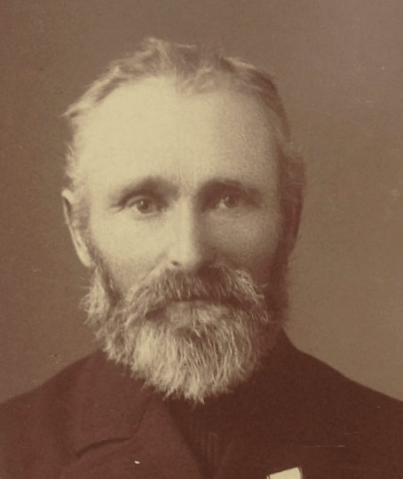

Mellem Vesterhavet og Nissum Fjord ligger et stykke land, som vinden aldrig helt har givet slip på. Klitterne vandrer. Sandet lægger sig i markskellene. Bag klitrækken sænker jorden sig i lave, våde strøg, hvor vandet ikke løber, men siver.
Et sådant sted kaldte man et kær.
Og et af dem hed Silkjær.
Dette er historien om det sted — og om de mennesker, der tog dets navn med sig, da de gik derfra.
Men det er ikke mændene, der bærer den. Navnet nåede frem, fordi kvinderne blev ved med at give det videre — hver gang de selv havde mistet det ved altret.
De samme fornavne går igen i hver generation — der er seks Niels’er og tre Ane Johanne’r i det følgende. Bliver trådene svære at holde, står de skilt ud i navnenøglen bagest, sammen med slægtstavlen.
Kæret
Silkjær var et sted, længe før det var en familie. Navnet står som selvstændig lokalitet i Husby Sogn i Danmarks Stednavne, med en kildeform der rækker tilbage til omkring 1650 — mere end to hundrede år før nogen i denne fortælling blev født.
I dag ligger stedet på Øhusevej 1B i Vester Husby, og navnet Økjær forbindes med ejendommen på nummer 3. De to navne hører sammen som to sider af det samme landskab — men Økjær er det løsere af dem.
»Kæret ved det stille vand« er en smuk læsning — og muligvis rigtig. Men det er en tolkning, ikke et faktum.
To ting er derimod sikre: navnet har intet med silke at gøre. Og det er vokset op af jorden.
Sådan blev gårdnavne til på egnen. De beskrev, hvad man så. Og fordi der i et lille sogn boede alt for mange, der hed Niels og Jens og Thomas, blev gården hurtigt også en måde at kende folk fra hinanden på.

Havbjergene
Det er fristende at læse dette landskab som ferieland. Det var det ikke.
Sandflugten havde i århundreder ædt sig ind over agrene. Jorden var mager, vinden stod på fra vest året rundt, og om vinteren kunne stormene tage tag, både og afgrøder på én nat. Og havet lå der, få kilometer fra kirken, uden en eneste havn.
Fiskeriet foregik fra åben strand. Bådene blev trukket ned over sandet, sat ud gennem brændingen og trukket op igen, når man kom hjem. Man tog ud, når vejret tillod det, og man læste vejret selv. Familierne levede af begge dele på én gang: et husmandsbrug på land og garn i havet.
I klitterne bag stranden — det, man på egnen kaldte havbjergene — lå gårdene lavt og lunt, med markerne vendt væk fra vinden. Det var her, slægten hørte hjemme.


Thomas og Anne Marie
Thomas Jensen blev født 12. december 1825 i Husby og blev husmand og fisker i Økjær. Navnet fortæller, hvad man dengang havde brug for at vide: han var Jens' søn.
Og bag ham går rækken videre. Faderen hed Jens Olesen Klit, født 1785. Hans far igen Ole Jensen Klit, født 1753 på Sønder Klit. Tilnavnet siger det hele: før slægten var Silkjær, var den Klit — opkaldt efter det samme landskab, blot en anden del af det. Sandet før kæret.
Slægtens rod ligger hundrede og tredive år før Silkjær-navnet, ude på Sønder Klit, og mønsteret er ældre end navnet: her tog man altid stedet med sig, når man skulle sige, hvem man var.
Fem slægtled kan følges på Klitten, tilbage til Ib Jensen Klit, født på Husby Klit 8. september 1710. Han og Jens Nielsen Klit, født omkring 1720, sad som fæstegårdmænd på Sønder Klit — to naboer på samme klitrække, hver med sin gård i fæste under herremanden.
Deres børn blev gift med hinanden. Ole Jensen Klit, født 7. november 1753, og Kirsten Ibsdatter, født 14. marts 1754, kom til verden fem måneder fra hinanden på samme klit — og blev mand og kone. Sådan så en klitegn ud indefra: man giftede sig med nabogården, fordi der ikke var andre gårde.
Jens Olesen og Maren blev gamle sammen og døde fire dage fra hinanden: hun den 3. marts 1861, han den 7. [S40]
Ét ord i rækken fortjener at blive læst langsomt. Ole Jensen Klit var strandfoged. Det var ikke et hverv, man søgte; det var et, man blev udpeget til. Strandfogeden var øvrighedens mand på sit stykke kyst: han skulle holde vagt ved vrag, bjærge og registrere det, havet kastede op — tømmer, tovværk, tønder, og de druknede — og svare for det over for strandingskommissionæren. På en kyst uden havn var det stillingen, hvor sognets forhold til havet blev til papirarbejde.
Toogtres år efter hans død druknede hans sønnesøn i det samme vand.
Konerne kom heller ikke langt væk. Kun én gjorde: Maren Thomasdatter var født i Stadil, nordøst for fjorden, hvor hendes far Thomas Nielsen Langager står i folketællingen 1801 som »husmand med jord og enroulleret matros« — indskrevet i søruller og dermed udskrivningspligtig til flåden. Året, listen blev ført, lå den engelske flåde på Københavns red. Fra det hus kom pigen, der blev gift ind i Husby Klit.
Kvinden, Thomas Jensen giftede sig med, fortjener mere plads, end kilderne normalt giver hende.
Da hun 20. november 1853 stod brud i Vedersø Kirke, giftede hun sig ikke opad. En husmand og fisker i Økjær ejede mindre jord og mere risiko end det hjem, hun kom fra. Hvad hun tænkte om det bytte, ved vi ikke; ingen skrev det ned. Men hun gjorde det, og hun flyttede de få kilometer fra Tarpgaards marker til Økjærs kær og klit.
To år efter, 9. juli 1855, fødte hun sønnen Niels. Hun fik ti år i Økjær. Den 15. august 1863 døde hun der, kun 35 år gammel, fra små børn.
Anne Marie er det første af flere steder i denne fortælling, hvor en kvinde bærer slægten videre og næsten forsvinder i papirerne bagefter. Det er kildernes skævhed, ikke virkelighedens.
Uden Tarpgaard-datteren var der ingen Niels — og ingen af de følgende kapitler.
Da døden
kom til huset
I Økjær tog sommeren 1863 to fra det samme hus.
Anne Marie Jansdatter, Thomas Jensens hustru, døde den 15. august 1863, 35 år gammel. Otte dage senere, den 23. august, døde deres lille datter Kirstine, der var døbt i julen 1860 og altså ikke fyldt tre år.
Seks år efter, den 6. juli 1869, døde endnu en datter, Karen Marie, født den 1. juni 1862. Hun blev syv år.
Om årsagerne siger de tilgængelige kilder intet sikkert. Det var en tid, hvor børnedødeligheden var høj i de vestjyske husmandshjem, og hvor de små især døde af de smitsomme sygdomme — mæslinger, kighoste, difteri og skarlagensfeber — men hvad der ramte netop dette hus, står ikke fast.
Thomas Jensen sad tilbage som enkemand med de overlevende børn. Sådan blev han ved i femten år.
Så kom den femtende sommer, og efter den en novemberdag.

Den 9. november
1878
Thomas Jensen omkom på havet. Han blev begravet i Husby den 17. november. Han blev 52 år.
Kirkebogens formulering er ordret: »druknet ved kæntring med havskib«. Et havskib var den fladbundede vestjyske strandbåd, der blev sat ud direkte fra den åbne strand — der var ingen havn. Samme dag registreres en anden lokal mand, Anders Knudsen Øe, som druknet ud for Stage i Vedersø »sammen med fire andre«.
Det, vi ved, er nok: en fisker fra Økjær sejlede ud en novemberdag og kom ikke hjem.
Slægtsbøgerne fra egnen gengiver to af de omkomne ordret. Om Iver Christian Olesen, husmand og fisker i Økjær, står der: død 9. november 1878 på havet, druknet ved Vedersø — »hans lig blev aldrig fundet«. Om manden fra Øe i Husby står der: »druknede på havet ud for Stage i Vedersø sammen med 4 andre«.
Fem mand er præcis besætningen på en fuldt bemandet vestjysk havbåd. To af dem kender vi ved navn. Tre gør vi ikke — og det er blandt de tre, Thomas Jensen med al sandsynlighed hører.
Fiskepladsen »Stage« ved Vedersø er den samme lokalitet, som gav navn til Stagegaarden — hvis mand, Anthon Stage, syvogtredive år senere stod som nummer tolv i redningsmandskabet.


Niels Thomsen
bliver Silkjær
Niels Thomsen blev født 9. juli 1855 i Husby og døbt den 22. juli. Som sin far blev han husmand og fisker i Økjær. Men før noget andet skete i hans liv, skete dette:
Han blev gift mellem sin fars død og sin fars begravelse. Det lyder som en skandale, og det var det næsten sikkert ikke.
Efter forordningen af 1824 skulle præsten lyse til ægteskab fra prædikestolen tre søndage i træk. En vielse den 14. november betyder, at lysningen var begyndt omkring midten af oktober — før ulykken. Brylluppet var altså berammet, da havet tog faderen. At aflyse ville have været både bekosteligt og upraktisk; man holdt i stedet det, egnen kaldte et stille bryllup — uden festligheder, måske i hjemmet.
Bruden var efter slægtstræets oplysninger født omkring 1843 — altså omkring tolv år ældre end sin mand. I et hjem, hvor forsørgeren netop var druknet, og hvor et husmandsbrug og et fiskeri skulle passes samtidig, er det ikke svært at læse: en treogtyveårig kunne ikke både sejle ud og drive stedet alene. Aldersforskellen peger på et fornuftsparti, indgået i tide og fuldbyrdet i sorg.
Ægteskabet blev kort. Ane Johanne Kristensen var født 25. september 1843 i Rindom Sogn. Hun fødte datteren Ane Marie 2. marts 1880 — og døde i Økjær 13. september samme år, godt seks måneder efter fødslen, 36 år gammel. Hun blev begravet på Husby Kirkegård den 19. september.
På under to år havde Niels mistet sin far og sin hustru og var blevet enkemand med et spædbarn. Halvandet år senere, 10. november 1881, giftede han sig i Husby med Ane Jensen, født 29. april 1858 i Ejsing ved Vinderup og døbt den 2. maj. Husby-sognebogen giver os endelig hendes forældre: en Jens Claus og en Stine — og dermed forklaringen på, hvem sønnen fra 1886 blev opkaldt efter.
Også her er det værd at standse et øjeblik. Ane Jensen trådte ind i et hjem med et spædbarn efter en død hustru, fødte selv en stor børneflok — og endte, som vi skal se, sine dage et helt andet sted, end hun begyndte.
Da datteren Ane Kirstine i 1920 blev viet i Nysogns Kirke, skrev præsten i kirkebogen, at hun var »datter af husmand Niels Silkjær og hustru Ane Jensen af Husby«. Gårdnavnet var blevet hans navn — uden forbehold, i sognets egne bøger.
Husby-sognebogen fra omkring 1950 gør regnskabet mindre rent. I opslaget om Ole Lauridsen får hustruen Ane Marie sine bedsteforældre opregnet, og der står: »FF Thomas Silkjær, FM Ane Marie«. Det er Thomas Jensen og Anne Marie Jansdatter — manden, der druknede i 1878, og hans hustru. I sognets egen bog bærer han også navnet.
Det vælter ikke kapitlet. En sognebog fra 1950 er en tilbageskuende kilde: den navngiver forfædre, som familien og sognet huskede dem, halvfjerds år efter, og de samtidige indførsler kalder ham Thomas Jensen. Men det flytter noget. Da eftertiden skulle sætte navn på slægtens ældste led, satte den Silkjær på faderen også — navnet blev skudt et slægtled længere tilbage, end papirerne bærer.
Det er en lille ting på papiret og en stor ting i virkeligheden. Et patronym dør hver generation; det siger kun, hvem din far var. Et stednavn kan arves. Med Silkjær fik familien for første gang et navn, der kunne gives videre.
Han døde 17. juni 1928 i Esbjerg og blev begravet på Esbjerg Ny Kirkegård. At en husmand fra Økjær endte sine dage i Esbjerg, er ikke en tilfældighed. Det er hele den næste del af historien.
Børnene fra Økjær
Niels Thomsen Silkjær fik en stor børneflok, som voksede op i og omkring Økjær. Alle bar de Silkjær i navnet, i vekslende former: Nielsen Silkjær, Jensen Silkjær, eller blot Silkjær. Det bliver afgørende for alt, hvad der følger — for navnet gik ikke kun til den, der blev boende. Det gik ud i verden med hvert eneste barn.
& Ellen
Den ældste af søskendeflokken får sit eget opslag i sognebogen — under sin mands navn. Ole Lauridsen var født i Husby 29. maj 1861 og døde 11. juli 1916; han var altså nitten år ældre end sin kone. De fik otte børn. Da han døde, var Ane Marie seksogtredive år og stod med flokken alene — samme alder, og næsten samme situation, som hendes egen farmor og stedmor havde stået i.
Hun blev på gården i fireogfyrre år efter hans død. Omkring 1950 står der om stedet:
»Fru Lauridsen har Gaarden her i Dag, men al Jorden er lejet ud, og om Sommeren har Fruen en Del af Stuehuset lejet ud til Sommergæster.«
Læs den sætning sammen med kapitel 2. Landskabet, der ikke var ferieland — mager jord, sandflugt, fiskeri fra åben strand — var ved at blive det. Og den første i slægten, der levede af det, var en enke, som lejede sine marker ud og sine stuer til gæster fra byen. Jorden gav ikke længere nok. Udsigten gjorde.


Sognebogen har ham med som husmand i Damhus, Sønder Nissum: Niels Silkjær Lauridsen, født i Husby 9. august 1911, søn af Ole Lauridsen og Ane Marie. Under bedsteforældre står der kort og godt: MF Niels Silkjær, Husmand, Husby — morfaderen, manden fra kapitel 6.
Gift med Elin Kamma Lillelund, én datter: Henny, født 16. april 1940. Han overtog ejendommen efter sin svigerfar i 1938 — otte tønder land, hvoraf to var krat, og et stuehus på firs-hundrede år.
Det er den samme bevægelse som hos Ane Johanne: navnet bliver båret videre af en mand, der officielt hedder noget andet.
Redningsmændene
ved Vedersø
Efter en lang række katastrofale strandinger oprettede staten i 1852 Det Nørrejyske Redningsvæsen. Der var stadig ingen havn: redningsbåden stod på et hjulsæt i et bådehus, blev spændt for heste, kørt gennem klitterne og sat ud direkte i brændingen — i det samme vejr, som havde bragt skibet i nød.
Der findes et fotografi af mandskabet ved redningsstationen Vedersø — og bag det, i arkivet, ligger den håndskrevne seddel, hvor nogen har navngivet hver eneste mand fra venstre mod højre. Overskriften siger »ca. 1910-20«, og en anden hånd har senere skrevet 1915 ovenover.
Læg mærke til nummer to og nummer fire. Manden hedder Silkjær og bor Silkjær — navn og gård i samme åndedrag. Og hans nabo har ikke brug for anden adresse end »nabo til Silkjær«. På denne seddel er stedet blevet et fikspunkt, som hele rækken orienterer sig efter.
Længe var manden på fotoet en velbegrundet formodning. Det er han ikke længere. Slægtens egne optegnelser giver Niels Thomsen Silkjær to erhverv, ikke ét: »Husmand & Fisker, Økjær i Husby« — og »Bådsmand, Redningsstationen, Vedersø«. Han var altså ikke tilfældigt med på et gruppebillede. Han var fast mand ved stationen. [S15, S21]
Så kan billedet sige, hvad det er: i 1915 stod bådsmanden fra Silkjær i redningsmandskabet ved Vedersø, 60 år gammel. Syvogtredive år tidligere var hans far druknet på den samme kyst — og et sted derude lå Iver Christian Olesen, hvis lig aldrig blev fundet.
Havet havde taget hans far. Han meldte sig til at hente andres fædre hjem. Det var ikke heltemod. Det var naboskab, organiseret — og i hans tilfælde var det også et svar.


Ane Johanne
Hun er den vigtigste kvinde i denne fortælling, og også den, kilderne fortæller mindst om.
Født i Økjær 22. oktober 1883, døbt i Husby Kirke 18. november — datter af Niels og hans anden hustru, Ane Jensen. Vi kender hendes datoer, hendes vielse, hendes børn. Vi kender ikke hendes stemme: ingen breve, ingen erindringer. Men ét sted taler hun faktisk selv i kilderne, og det vender vi tilbage til.
Den 22. marts 1906 blev hun viet i Husby Kirke, 22 år gammel. Brudgommen kom ikke fra kysten: Mads Erik Madsen, født 28. juli 1879 i Hanning Sogn og døbt i Hanning Kirke den 17. august, søn af Knud Madsen og Ane Eriksen. Han var murer — senere murermester i Hanning. Ved folketællingen 1901 boede han på Sofievej i København: han havde været ude i verden, før han kom tilbage og hentede en kone i Husby.
Alle kvinder før hende i denne fortælling havde giftet sig inden for det samme landskab: fra Tarpgaard til Økjær, fra Økjær til Husby Klit. Ane Johanne giftede sig med et fag — og et fag boede ikke noget bestemt sted.
En murer fulgte arbejdet, og i de år blev der bygget inde i landet: i stationsbyerne, langs de nye baner, i de voksende landsogne på den opdyrkede hede. Hun blev den første i den direkte linje, der forlod kysten helt.
Fra Husby til
Rækker Mølle
Vejen kan følges i børnenes fødesogne — og i folketællingerne, der viser familien i Husby 1890, i Sædding 1911, 1916, 1921 og 1925, og i Vorgod 1930. Hele migrationen er dokumenteret, skridt for skridt.
Retningen er tydelig: væk fra havet, ind i det byggende Danmark. Og nu til det sted, hvor Ane Johanne selv taler i kilderne.
Børnene fik efternavnet Madsen — sådan var reglen. Men nogen valgte at sætte moderens slægtsnavn ind i midten af drengens navn, hos et barn født fyrre kilometer fra gården, i et sogn hvor navnet intet betød for andre.
Det valg er det nærmeste, vi kommer Ane Johannes egen stemme: en kvinde, der var rejst fra Økjær, men ikke agtede at lade stedet forsvinde ud af familien.
Og så fik hun fjorten børn.
Den ældste, Anne, kom i 1907, året efter brylluppet. Den yngste, Elisabeth, i 1925. Atten år, fjorten fødsler, tre sogne — elleve af børnene kom til verden inden for de ti år mellem 1907 og 1918.
Flokken spredte sig, som store flokke gjorde: Niels Silkjær til Ikast, Dagmar og Laura blev i Vorgod-egnen, Christian endte i Videbæk — og Knud, den næstældste, døde i 1973 i Calgary i Canada. Mureren fra Rækker Mølles søn ligger begravet på den anden side af Atlanten.
Mads Erik døde 2. august 1951. Ane Johanne overlevede ham i fem år og døde 19. november 1956. Ikast-egnen, som slægten senere forbindes med, kom ikke gennem hende, men gennem sønnen Niels Silkjær Madsen: han blev gift i Isenvad Kirke i 1933 og døde i Ikast i 1972.
Laura
Blandt Mads Erik og Ane Johannes fjorten børn var en datter, Laura — nummer ti i rækken. Efter familiens oplysninger blev hun født 25. marts 1917, og kirkebogsindekset for Sædding knytter en Laura Madsen ved Rækker Mølle til netop disse forældre.
Hun var husassistent. Den 29. december 1938 blev hun gift i Vorgod Kirke med Laurids Mikkelsen, født 11. september 1911 i Fjelstervang i samme sogn, gårdejer på Nygaard. Hun havde fulgt sine forældre ind i landet og fandt sin mand dér, hvor de var landet.
Blandt deres børn var Knud, født 19. november 1943 i Sædding, og Leif, født 24. maj 1956 — begge med Silkjær som mellemnavn. Familien nævner desuden Edith, Birthe og Ernst; hele flokken er endnu ikke bekræftet i træet.
Laura bar ikke selv Silkjær i sit officielle navn; det var hendes mors, ikke hendes. Hun kunne have ladet det ligge — ingen ville have bemærket det, og intet krævede det. I stedet blev det givet videre til næste generation, ligesom hendes mor havde gjort det før hende.
Laurids døde 22. september 1996. Laura fulgte året efter, 30. september 1997, i Vorgod — enoghalvfems år efter at hendes mor forlod kysten, og hundrede og fyrre kilometer fra det kær, navnet kom fra. De ligger sammen på kirkegården i Fjelstervang under fire linjer og tre ord.


Enken
fra Årgab
Der var ingen havn ved Årgab. Der var en strand, en række klitter og en åben, urolig sø.
Bådene blev sat ud i den med håndkraft og trukket op af den igen med håndkraft. Årgab var ét af de fire gamle fiskerlejer på den smalle Holmsland Klit — sammen med Haurvig, Brunbjerg og Kokkedal, som allerede i 1553 nævnes samlet i et kongebrev. I klitterne lå fiskerboderne, hvor fiskerne og esepigerne, der satte madding på krogene, opholdt sig fra april til Sankt Hans.
Kristiane Enevoldsen — i kilderne også skrevet Christiane — blev født på klitten den 27. marts 1873, datter af gårdmand Simon Enevoldsen og Ane Marie Christensen i Haurvig.
Den 1. april 1892 blev hun i Haurvig Kirke — hvidkalket, nyromansk og rejst tre år før hendes egen fødsel — viet til Christen Olesen Enevoldsen, husmand, fisker og bådfører i Årgab, født samme sted den 17. oktober 1871. De bar samme efternavn, men hørte til to forskellige Enevoldsen-slægter på klitten — navnet stammede i begge tilfælde fra en fjern forfader ved navn Enevold.
Som bådfører havde Christen ansvaret for båden og dens mandskab, når den blev sat ud gennem brændingen og trukket op igen.
Præcis fire år efter brylluppet druknede han ud for Årgab Strand. Liget blev fundet dagen efter, den 2. april, i Peder Christian Dahls strandlen i Bjerregaard. Et strandlen var en tildelt strækning af kysten, hvor en bestemt gård havde både ret og pligt over for det, havet kastede op — vraggods, tømmer og de druknede.
Christen blev begravet fra Haurvig Kirke den 6. april 1896.
Kristiane var da 22 år. Efter de dokumenterede arkivalier havde hun én lille søn, Simon, født 2. maj 1894.
Der gik ti år.
I 1906 giftede hun sig igen — med fiskeren , der var født i 1882 og altså næsten ni år yngre end hende. To af parrets børn, tvillinger, var da allerede født i 1904, to år før vielsen. Familien flyttede siden til Esbjerg, hvor Thomas blev fiskeskipper og fører af kutteren E.94 ANNE KIRSTINE.
I det ægteskab mødtes to slægter, der hver havde givet havet en mand. Kristianes første mand druknede ud for Årgab i 1896. Thomas' egen farfar, Thomas Jensen, druknede ved kæntring med et havskib ud for Husby i 1878.
En snes år senere sejlede sønnerne fra Esbjerg-hjemmet ud på den samme Nordsø — under krigen, med våben til modstandsbevægelsen.
Kristiane Enevoldsen levede længe. Hun døde i Esbjerg den 31. juli 1963, 90 år gammel.


På kirkegården i forgrunden står sten med navnet Tarbensen — den slægt, Ane Kirstine Silkjær giftede sig ind i nyttårsdag 1920.

Malerens egen påskrift: »Fiskeri med gl. Havskibe« — præcis den bådtype, Thomas Jensen kæntrede med i 1878.
Fiskeskipperen
Nu skal vi tilbage til Økjær — og til drengen, der blev født der 10. januar 1882. Thomas Nielsen Silkjær var Ane Johannes bror. Hvor hun gik ind i landet, gik han ud mod havet — hele vejen til Esbjerg, byen der på én generation var vokset fra en plan mark til Danmarks fiskeriby nummer ét.
Vi kender ham usædvanligt godt, for han står med fuld biografi i det samtidige værk Dansk Fiskeristat fra 1935—36.

Læg mærke til to ting. Den ene er faderens titel: dannebrogsmand. Niels Thomsen Silkjær var hædret med Dannebrogsmændenes Hæderstegn. Hvad han fik det for, ved vi ikke; det er fristende at tænke på redningsstationen, men det er en formodning, indtil kilden er fundet.
Den anden er adressen. Havnegade 179 er broen mellem slægtens to verdener. Her boede Thomas. Her registreres også hans søn Christian Lauritsen Silkjær — i slægtsfilen kaldt Kristen Lauridsen Silkær — født 4. maj 1904 på Holmsland Klit, der tog skippereksamen i 1924 og førte kutteren E.426 BERGIT. Og her døde Niels Thomsens enke, Ane Jensen, 23. juni 1936.
Tænk på den kvindes bue: født på Landting Mark i 1858, gift ind i et enkemandshjem i Økjær i 1881, en stor børneflok ved klit og kær — og de sidste år i en fiskeskippers hjem på havnen i Esbjerg, hvor hun døde 78 år gammel.
Hun kom til Økjær som treogtyveårig i november 1881 og trådte ind i et hus, hvor der lige var død en kone. På bordet lå der sorg, og i vuggen lå der et halvandet år gammelt barn, Ane Marie, som ikke var hendes. Fra den dag var hun barnets mor — sognebogen kalder hende siden helt enkelt »Hustru Ane«, uden at skelne.
I de næste enogtyve år fødte hun ni børn i det samme hus: Thomas i 1882, Ane Johanne i 1883, Jens Klaus, Esper, Karen Marie, Ane Kirstine, Sidsel Kathrine, Jensine Kristine — og Ellen i 1902, da hun var fireogfyrre. Det er hendes børn, der bærer navnet ud i landet. Hver eneste gren i denne krønike går gennem hende.
Og så flyttede de. Niels Thomsen Silkjær døde 17. juni 1928 i Esbjerg og blev begravet på Esbjerg Ny Kirkegård — ikke i Husby, hvor han var døbt, viet to gange og havde levet i treoghalvfjerds år. Hvornår de forlod klitten, siger kilderne ikke. Men de gjorde det begge to, og de gjorde det til sønnens by.
Ane Jensen blev enke i otte år og døde i sønnens hjem på Havnegade 179 den 23. juni 1936, seksoghalvfjerds år gammel — seks dage efter den dato, hun havde mistet sin mand på otte år tidligere. Hun var da den sidste voksne af Økjær-husstanden.
Det er en flytning, man kan læse på to måder. Den ene: to gamle mennesker, der fulgte arbejdet og børnene ind til byen, som hele Vestjylland gjorde i de årtier. Den anden: at parret, som havde levet et helt liv på en kyst uden havn, endte deres dage ved Danmarks største fiskerihavn — og at ingen af dem ligger begravet i det sogn, hvor navnet blev til.
Flytningen fra klit til by var ikke et brud med havet. Den var en forfremmelse: fra åbne både, man trak op på sandet, til dæksbåde med motor, der kunne blive ude i dagevis. I Fiskeri- og Søfartsmuseets fartøjsregister står Thomas som T. N. Silkjær, ejer af E.94 ANNE KIRSTINE fra 1923 til 1948.


Tre mænd, tre kuttere, én gade. På halvtreds år var slægten gået fra åbne både på Husby Klit til en fast plads i landets største fiskerihavn — og et navn, der stod i erhvervets egen håndbog.
Anne Kirstine
og krigen i Nordsøen
Den første ANNE KIRSTINE var bygget i Assens i 1897 af eg og fyr, målte 34 bruttoregistertons og kom til Esbjerg i 1917. I 1945 var den en aldrende arbejdsbåd i en overvåget havn: Atlantvolden lå som en betonstreg gennem klitterne, og fiskerne sejlede med tyske øjne på sig. Krigen kostede 127 danske fiskere livet i Nordsøen og Skagerrak.
Det er i den situation, at våbensejladsen over Nordsøen skulle sættes i gang igen. Nedkastningschefen Toldstrup overdrog arbejdet til Lonsdale — dæknavn »Oscar Dahl« — og til sognepræsten i Sdr. Onsild ved Randers, Hans Kvist-Jensen, der illegalt kaldte sig »Jørgen Jensen« og mange år senere blev biskop i Roskilde. I december 1944 blev deres gruppe i Randers revet op, og de to blev sendt til Esbjerg for at retablere sø-operationerne.
Præsten havde én ting, ingen anden udsendt havde: han var gift med datteren af Esbjergs tidligere fiskeriformand. Og det var gennem sin svigermor, Eline Christiansen, at han fik kontakt til en fiskeskipper, der rådede over kutteren ANNE KIRSTINE. Skipperen hed Niels Silkjær. Han sagde ja — og skaffede selv den næste mand: skipper Jens Frich på kutteren VEGA.
Niels og Ejlert var Thomas Nielsen Silkjærs sønner. Niels Silkær født 26. september 1910 i Aargab, døbt i Haurvig Kirke 16. oktober; Ejlerth Marius Silkær født 29. januar 1915 i Hjertinggade 13 i Esbjerg, døbt i Zions Kirke 7. marts.
Dermed er linjen hel: manden der sejlede våben gennem Esbjerg havn i marts 1945 var sønnesøn af husmanden fra Økjær — og oldesøn af fiskeren, der druknede i 1878. Tre generationer, samme kyst, samme hav.
- 6. JANUAR 1945De to både var klar til at sejle. Mødestedet var aftalt: en position på Outer Silver Pit, en fiskebanke midt i Nordsøen. Så satte vejret ind — et rigtigt grimt vintervejr med næsten konstant storm — og bådene blev hjemme i ti uger.
- 8. MARTS · VENTETIDEN BRUGTKvist rejste sammen med Ejlert Silkjær til Hvide Sande og fik straks ja fra fiskeskipper Jens Aae. Men da Kvist havde set på forholdene, opgav han havnen: den kunne overvåges fra en tysk observationsbunker, og kontrollen var usædvanlig grundig. De to fortsatte til Thyborøn, hvor den tidligere Esbjerg-fisker Harald Iversen sagde ja og hurtigt skaffede flere skippere. Så rejste de tilbage til Esbjerg.
- 16. MARTS 1945Vejret var endelig godt nok. ANNE KIRSTINE og VEGA sejlede.De nåede frem til mødestedet uden problemer og blev det sidste stykke vej fulgt af engelske fly, der kom tæt ned over kutterne og vippede med vingerne.
- LASTENGodset var pakket i vandtætte blikbeholdere, lagt i sejldugsposer. På VEGA gik poserne ned i lasten. ANNE KIRSTINE havde dam — det vandfyldte rum, hvor fangsten normalt holdtes levende — så hendes del måtte sænkes ned deri. Det gik udmærket bortset fra nogle beholdere med tændsatser: de ville ikke synke og endte gemt i et skab i lugaret. Ud over godset fik kutterne petroleum, kaffe, the, whisky og cigarer.
- PÅSKELØRDAG · 31. MARTSBegge kuttere kom heldigt gennem havnekontrollen i Esbjerg og lossede deres fisk.
- NATTEN EFTERGodset til modstandsbevægelsen blev bragt i land hundrede meter fra de tyske vagter ved Halle-restauranten. Ni missionsfiskere bar det tunge gods, mens Kvist og lederen af havnekompagniet, Holger Nielsen, dækkede aktionen med maskinpistoler. Det gik godt. Alle kom hjem.
Man skal hverken gøre historien større eller mindre, end den er. To fiskere sagde ja til at sejle våben gennem en overvåget havn i krigens sidste måneder, med dødsstraf som den oplagte konsekvens, hvis de blev opdaget. De hed Silkjær.
Der blev straks gjort klar til den næste tur, og i alt seks Esbjerg-kuttere havde sagt ja. Den kom aldrig af sted. Så sent i krigen var der stor modstand mod at fiske til Tyskland, og den lokale modstandsbevægelse — som intet vidste om våbentransporterne — forbød kutterne at fiske efter andet end til hjemmemarkedet. Få dage senere opfordrede Danmarks Frihedsråd Esbjerg-kutterne til at sejle til England. Esbjerg var dermed ødelagt som modtagehavn, og arbejdet flyttede til Thyborøn. ANNE KIRSTINEs tur blev den ene, der lykkedes.
Og så forholdet: i alt otte laster nåede Danmark ad søvejen — anslået mellem 16 og 32 tons. Målt mod det, der blev kastet ned fra luften, er det forsvindende lidt. Transporterne skal derfor ikke vejes på deres militære betydning, men på hvad de krævede: blev lasten fundet, havde fiskerne ikke engang våben at forsvare sig med. Skipperne i Thyborøn blev tilbudt 10.000 kroner pr. last og sagde alle tre nej — de ville kun have normal betaling for fisken. Anerkendelsen fra det officielle Danmark udeblev.
Esbjergs eget flåderegister nævner det tørt i posten for E.94, mellem tonnage og ejerrække: »Sejlede våben til Esbjerg under 2. verdenskrig fra engelske kuttere.« Otte ord i et fartøjsregister — det er den nærmeste ting til en officiel anerkendelse, fiskerne fik. Efterspillet kan følges i samme register, og det ender med en dato, der lukker sig om historien: den gamle ANNE KIRSTINE grundstødte ved Hartlepool i marts 1948; en ny blev bygget i Hobro i 1949. Den 20. marts 1950 døde Thomas Nielsen Silkjær på Havnegade 179 og blev begravet fire dage senere på Esbjerg Ny Kirkegård. Samme år gik kutteren fra T. N. Silkjær til Niels Silkjær. Sønnen overtog det fartøj, han fem år tidligere havde sejlet våben i — ikke ved et køb mellem fremmede, men fordi hans far var død.
Niels beholdt den til 1976. Ejlert fortsatte i fiskeriet; kutteren E.714 LACERTA blev bygget til ham, og han sejlede stadig fra Esbjerg med den i 1984. Året efter døde de begge — med seks ugers mellemrum i 1985, Niels den 16. april og Ejlert den 28. maj. De ligger side om side på Fovrfeld Gravlund.
Fra et kær i Husby til Nordsøen i krig. Navnet havde bevæget sig langt.

T. N. Silkjær ejede det ældre fartøj 1923—1948; Niels Silkjær ejede efterfølgeren 1950—1976.

Kutteren
Kutteren var familiens levebrød. Hun havde et navn, et nummer og en livshistorie, der løber gennem tre generationer.
Thomas Nielsen Silkjær tog sin uddannelse på Fiskeskipperskolen i Esbjerg i 1916—17. Fra 1923 var han fører og ejer, og med ANNE KIRSTINE drev han i mellemkrigstiden fiskeri fra Esbjerg ud i Nordsøen.
Efter mange danske vestkystfiskeres mønster sejlede han også fisken til England. Fra det tidlige forår, til efterårets storme satte ind, fiskede kutterne i Nordsøen og landede fangsten i de engelske havne — det gav afsætning og valuta.
Det var den rute, der i marts 1945 gjorde en våbentransport troværdig. Og det var den rute, der tre år senere satte hende på grund.
Søforhøret i Esbjerg den 3. april 1948 fastslog, at grundstødningen skyldtes strømsætning. Kutteren kom altså fri og forliste ikke ved selve grundstødningen. Året efter, i 1949, blev en ny ANNE KIRSTINE bygget på Hobro Skibsværft — 31,58 bruttoregistertons, kaldesignal OUKN — og overtog både navnet og havnenummeret E.94.
I 1950 døde Thomas Nielsen Silkjær, og kutteren gik i arv til sønnen Niels Silkjær, der stod som ejer frem til 1976.
Et skib, der gik i arv, og et navn, der fulgte med.
I 1976 slap slægten kutteren — og så mistede hun navnet. Hun blev solgt til Lemvig, fik havnenummeret L.651 og hed derefter tre andre ting: Linda Vig (1976—80, partrederi v/ P. E. Enemark), Johnny Marianne (1980—81, E. Høj) og Charlotte Frank (fra 1981, partrederi v/ Theodor S. M. Madsen, Struer).
Til sidst var hun ikke længere fiskefartøj. Fra 1983 sejlede Finn Hansen hende fra Handbjerg og Gudum ved Lemvig som M.s. »Charlotte Frank« af Lemvig — sejlskib med hjælpemotor, lastskib.
»Udslettet den 29. Maj 1990 af DAS som ophugget.«
Hun blev treogfyrre år, og de seksogtyve af dem var Silkjær-år. Da familien gav slip, gik navnet med — præcis omvendt af det, der sker overalt ellers i denne krønike. Menneskene tog navnet med sig, når de flyttede. Skibet mistede det, da det skiftede hænder.


Da navnet
drog mod øst
Han var født ind i fiskerhjemmet i Økjær den 6. maj 1886, søn af Niels Thomsen Silkjær og Ane Jensen. Men forlod vestkysten.
Den 28. oktober 1911 blev han i Fausing i det østlige Jylland viet til Bodil Marie Bossow, født den 8. april 1887 i Auning.
Familien slog sig ned på Djursland. Efter børnenes fødesteder at dømme boede de først i Øster Alling, hvor de ældste kom til verden, siden i Vejlby, og en tid i Nimtofte. I 1925 boede hele husstanden på Vejlbyvej 2 i Vejlby ved Allingåbro.
d. 30.3.1989 i Hurup
Her var Jens Klaus kirkebetjent og graver ved Vejlby Kirke — en romansk kirke fra 1100-tallet, løftet op på landsbyens højeste punkt, med tårn og våbenhus af røde munkesten fra omkring år 1500 og en granitportal hugget af stenmesteren Horder, der virkede på Djursland i 1200-tallet. Få år efter familiens ankomst, i 1922—23, blev kirken stærkt om- og tilbygget med et nyt langhuskor og apsis i røde mursten.
Graverens arbejde fulgte kirkeåret og vejret: at grave gravene og kaste dem til, at ringe med klokkerne, at varme kirken op og at holde kirkegården.
Manden, der var vokset op ved en kyst, hvor de druknede af og til blev kastet op i en fremmed mands strandlen, gjorde nu de døde i muld i indlandet, langt fra havet.
Med Jens Klaus blev Silkjær et fast efternavn i en helt anden egn af Jylland. Sønnerne bar det videre; en af dem, Henry Silkjær, er senere omtalt netop som »søn af graver og kirketjener Jens Silkjær i Allingåbro«.


Grenene
Ti børn voksede op i og omkring Økjær. Fortællingen har fulgt tre af dem tæt. De øvrige gjorde det samme som alle andre: blev voksne, giftede sig, flyttede — og tog navnet med.
Derfor er Silkjær ikke én familie i Husby, men et net af familier. Inden for én generation sad navnet i Gudum og Salling, på Djursland, i Esbjergs havnegader, i Fjand og i Vallensbæk vest for København. Nogle af grenene har ikke set hinanden i hundrede år. De er lige beslægtede med kæret.
Esper Nielsen Silkjær (1888—1960) blev landmand og møllebygger. Han giftede sig med Jensine Mortensen, født i Gudum 9. juli 1889, og flyttede ind i hendes sogn — femogtyve kilometer fra havet, men stadig i Ringkøbing Amt.
Alle tre børn blev født i Gudum: Knud Vagnsgaard (1913), Jens (1916—2000) og Anne Kristiane (1917—2009, død i Holstebro). Sønnen Jens blev gårdmand og kværnbilder — den håndværker, der hugger møllestenene skarpe igen — og siden sognerådsformand, altså den første i slægten med et offentligt hverv. Han giftede sig i Andst i 1952 med Gertrud Marie, kaldet Misse, og døde på Skive sygehus i 2000. Enken Jensine blev treoghalvfems og døde i Struer i 1982.
Møllebyggerens søn skærpede møllesten. Faget gik videre, mens havet blev noget, man hørte om.
Ane Kirstine (1892—1977) blev nytårsdag 1920 gift med fiskeren Christen Cilius Tarbensen. Deres fire børn blev født i Esbjerg og fik alle moderens gårdnavn ind i deres eget: Christian Fjord Silkjær Torbensen (1920—1985), Kamma (1926—1997), Anna Kirstine (1929—2018) og Gerda (1938—1986).
Anna Kirstine kom til verden 15. april 1929 på Havnegade 132. Halvfjerds numre længere op ad samme gade boede hendes onkel Thomas, fiskeskipperen, på nummer 179. To husstande fra Økjær, samme gade i den nye by.
Hun blev gift i Zions Kirke 25. november 1950 med Jens Sand Christensen fra Sønder Lyngvig på Holmsland Klit — endnu et bånd tilbage til klitten — og døde på plejehjemmet i Hjerting som niogfirsårig, den sidste af de Esbjerg-fødte søskende. Deres datter Kirsten Sand Christensen (1951—2025) blev født og døde i Esbjerg.
Karen Marie (1890—1933) blev husmandskone i Sjælborg med Kristian Kornelius Bøndergaard og fik tretten børn på fjorten år: Kristen Magnus (1913), Niels Silkjær (1915), Anna Silkjær (1916), Theodor Salomon (1917), Henry (1918—2016), Ida Marentha (1919), Kaj (1920), Anker (1921—2005), Ninna Dagny (1922), Edith (1923—1962), Josva (1925—2015), Inga (1926) og Bent Karl (1927). Seks år efter den yngste var hun død, treogfyrre år gammel.
To af de tretten fik gårdnavnet med i deres eget. Niels Silkjær Bøndergaard (1915—1996) blev fisker og siden tankbådsfører i Esbjerg — kystfaget i ny form, med motor og olie i stedet for sejl og sild; hans kone Mary Margrethe kom fra Holbæk Amt, var kontorassistent og levede til 2013. Søsteren Anna Silkjær Bøndergaard (1916—1979) endte sine dage i Vallensbæk ved København.
Med hende nåede navnet Sjælland.
Jensine Kristine (1896—1964) giftede sig med Martin Jeppesen Nørfjand fra nabosognet Sønder Nissum, mistede ham i 1936 og blev boende i Fjand i otteogtyve år som enke.
Ellen (1902—1980) — pigen fra skolebilledet — giftede sig med Peder Christian Mathiesen fra Sjelborg og døde i Esbjerg. Sidsel Kathrine blev født juleaften 1894.
Og Ane Marie (1880—1960), den ældste, forlod aldrig Husby. Hun blev født i sognet, blev gift i sognet, sad enke på gården i fireogfyrre år og døde i sognet. Slægtsfilen navngiver seks af hendes børn — Ane Johanne (1909), Agnethe (1910—1998), Niels Silkjær (1911—1986), Kristine og Valdemar (begge 1913) og Maren (1915—1998) — hvor sognebogen taler om otte. Kun én af dem fik gårdnavnet: sønnen, der hed Niels Silkjær Lauridsen.
Den syvende gren er den østjyske: Jens Klaus’ seks sønner i Oustrup og Vejlby, hvor Silkjær for første gang blev et ganske almindeligt efternavn — den er fortalt i kapitel 16.
Ét mønster går igen på tværs af alle grenene: navnet rejste næsten aldrig som efternavn. Det rejste i midten af et navn — og det rejste med kvinderne.
Krøniken her følger Ane Johanne og Laura tættest, fordi det er den linje, hvor navnet til sidst blev efternavn igen. Men det blev båret lige så ægte i Gudum, på Djursland, på Havnegade og i Fjand — og de grene har deres egne kapitler, som andre må skrive. [S40]
De to
navne
Og hvad med selve stedet — gården, det hele er opkaldt efter? Her skal krøniken være ærlig, og ærligheden begynder med noget ubehageligt:
I alle led, hvor kilderne siger noget om bopæl, siger de Økjær — ikke Silkjær. Thomas Jensen var husmand og fisker i Økjær. Niels Thomsen var husmand og fisker i Økjær. Børnene blev født i Økjær. Navnet, familien tog, står aldrig som deres adresse.
Det er fristende at slutte, at slægten tog navn efter nabogården — at de boede på Øhusevej 3 og lånte navnet fra nummer 1B. Men den slutning hviler på en antagelse, kilderne ikke bærer: at Økjær og Silkjær var to gårde ved siden af hinanden, hver med sin matrikel og sit hegn.
Det passer dårligt med, hvad kirkebøgerne faktisk gør. I 1878 er både Thomas Jensen og Iver Christian Olesen husmænd og fiskere »i Økjær«; i 1911 dør en kvinde uden for slægten samme sted. Økjær rummer altså flere husstande. Så snart det er en lille bebyggelse eller et områdenavn og ikke én bygning, forsvinder gåden måske helt: familien kan have boet på Silkjær — i Økjær.
Geografien taler for det. Økjær lå ikke midt i en landsby, men i det åbne land mellem Øby og Øhuse, hvor matrikel 15 lå side om side med Silkjærs matrikel 13 langs vejen, der siden blev Øhusevej. Når kirkebøgerne skrev, at familien boede i Økjær, kan betegnelsen have dækket mere end én bygning: en gård, dens husmandssteder og jorden omkring det lave kær. Den nuværende ejendom på Øhusevej 3 fører navnet og matriklen videre, men er ikke nødvendigvis identisk med huset, hvor familien boede i 1800-tallet.
Sporet er læst baglæns: fra dagens 15f og 13b tilbage gennem de historiske matrikelkort til de to hovedmatrikler, de er udstykket af.
Matriklerne lå altså adskilt hele vejen igennem. Men en hovedmatrikel er ikke ét hus: matr. 15 kunne rumme både gården Økjær og de husmandssteder, der lå på dens jord. At familien boede »i Økjær« udelukker hverken det ene eller det andet.
Tre forklaringer står lige nu åbne, og de er alle hverdagslige. At slægten boede eller havde fæste på Silkjær, før den flyttede de få hundrede meter. At husmandsstedet lå i skellet mellem de to jorder, så præsten skrev det ene navn og familien tog det andet. Eller at sognet brugte det mest markante af de to navne løst om begge steder. På redningsmandskabets seddel fra 1915 er Silkjær netop det fikspunkt, naboen får sin adresse af. Navnet optræder desuden i flere stavemåder — Silkjær og Silkær — undertiden i samme dokument. Før matrikelkortet fra 1844 og fæsteprotokollerne er læst, er alle tre forklaringer formodninger, og det er det største hul i fortællingen.
- Hvor den ligger: Øhusevej 1B
- Hvordan den så ud i 1948 og 2025
- At navnet er mindst fra 1650
- At kilderne altid skriver Økjær om slægtens bopæl
- At de to steder lå på hver sin hovedmatrikel, 13 og 15
- At Silkjær-navnet alligevel fulgte familien
- At Johannes Madsen købte gården i 1936
- Rækken af fæstere og ejere før 1936
- Om slægten nogensinde boede på Silkjær
- Om Økjær var én ejendom eller flere husmandssteder
- Hvilken bygning på matr. 15 familien faktisk boede i
- Ejerskifterne i tingbog og matrikel
- Hvad der siden skete med Økjær

Husby-sognebogen har en biografi for gården — stavet Silkær. Johannes Madsen, født i Husby 15. juni 1891, gift med Marie Jensen fra Madum, syv børn født mellem 1916 og 1933. Og så den sætning, hele kapitlet ledte efter:
»Madsen købte Gaarden 1936 med 17 Tdr. Land opdyrket og udyrket samt beplantet.«
Dermed har vi et årstal. Senest i 1936 gik Silkjær ud af den navnebærende slægts hænder — fireogtyve år før skolebilledet, hvor gårdnavnet stadig hang ved i sognets omtale. To køer, tre kreaturer, fedesvin, to heste, og mælkekørsel i tredive år: sådan så livet på stedet ud, da navnet for længst var rejst videre uden det.
Tilbage står rækken før 1936 — hvem der sad på gården, da Niels Thomsen tog dens navn til sig, og hvornår slægten selv kom og gik.
To ting ved vi dog om afslutningen. Den ene er et skolebillede fra Husby Skole i 1960, hvor en dreng står noteret som »Kurt Pedersen (Silkjær)«. Han hed Pedersen; sognet identificerede ham stadig ved stedet. Gårdnavnet var altså i brug som stedbetegnelse, mens en anden familie sad på ejendommen — hvilket betyder, at den navnebærende slægt var gået fra gården før 1960.
Navnet fik under alle omstændigheder to liv. Ejendommen ved Øhusevej blev ved med at hedde Silkjær, uanset hvem der boede der. Og efterkommerne efter Niels Thomsen blev ved med at hedde Silkjær, uanset hvor de boede. Stedet kunne skifte folk; folkene kunne skifte sted.

Samme gård fra luften med syvoghalvfjerds år imellem — 1948 og 31. marts 2025. Den stråtækte længe står, hvor den stod. Læhegnene er vokset til skov, markstriberne er blevet til græs, og der er kommet et hvidt hus til mod nord.

Navnet som arv
Man kan ikke fortælle denne slægt rigtigt ved at følge efternavnene. Gør man det, får man en række skiftende navne — Jensen, Thomsen, Madsen, Mikkelsen — og mister tråden i første sving.
Tråden er Silkjær, og den løber gennem begge køn og alle grene.

Tre søstre fra Økjær. Tre forskellige mænd, tre forskellige efternavne, tre forskellige sogne. Og inden for seks år kalder de alle tre deres søn Niels Silkjær — opkaldt efter deres far, med gårdens navn siddende fast i midten. Det er ikke tilfælde. Det er en aftale, ingen behøvede at indgå.
Mændene førte navnet videre, fordi de beholdt det. Kvinderne førte det videre, selv om de mistede det — ved hver eneste vielse skiftede de officielt navn, og ved hver eneste dåb valgte de alligevel at skrive Silkjær ind i det næste barn.
Anne Marie Jansdatter, Ane Jensen, Ane Marie, Ane Johanne, Karen Marie, Laura: det er i høj grad kvindernes valg, der gør, at navnet overhovedet nåede frem.
Familien levede i en overgangstid, hvor stednavn, tilnavn, mellemnavn og efternavn overlappede hinanden. Samme person kan i kilderne stå som Thomsen, som Nielsen Silkjær eller blot som Silkjær — og det er ikke rod. Det er navnekulturen selv. Det bemærkelsesværdige er ikke, at navnet skiftede plads. Det er, at det blev ved med at være der.
Navnet nu
I dag bæres Silkjær igen som efternavn af efterkommere i Mikkelsen-linjen — børn og børnebørn af Leif, født 1956.
Cirkelen er ikke helt lukket; den slags cirkler lukker aldrig helt. Ingen af de nulevende har boet på gården, og de fleste har aldrig arbejdet på havet. Men navnet står, hvor det stod hos Niels Thomsen for godt hundrede og fyrre år siden: som familiens.
Det blev til en mand.
Det blev til en slægt.
Og det blev til det, en familie valgte at huske — hver eneste gang de havde lejlighed til at lade være.


Ni generationer
Fra fæstegårdene på Sønder Klit i 1710 til i dag. Alle ti af Niels Thomsen Silkjærs kendte børn står med hver sin søjle, og under hver søjle deres børn — treoghalvtreds navne i alt. Navne i brunt er dem, der bar Silkjær videre i deres eget navn.
Klik på et navn for at åbne personkortet. Tavlen er bredere end skærmen: træk i den — eller brug pilene.
Hvor billederne kommer fra
Nr. 11 og 12 er familiens eget materiale; resten stammer fra arkiver og offentlige samlinger. Et arkiv.dk-link giver ikke automatisk ret til at gengive billedet. Før trykning bestilles højopløselig fil og skriftlig brugsaccept hos ejerarkivet. Nationalmuseets Public Domain-materiale og Det Kgl. Biblioteks luftfotos kan bruges frit mod korrekt kreditering.
Hvad der er sikkert,
og hvad der ikke er
Hovedlinjen Thomas Jensen → Niels Thomsen Silkjær → Ane Johanne er stærkt underbygget af samstemmende, præcise kilder. Thomas Nielsen Silkjær som Esbjerg-skipperen bag »T. N. Silkjær« er dokumenteret i en samtidig biografisk kilde.
Ti forhold bærer stadig et forbehold, men de er af en anden slags end før: ikke længere tvivl om hvem folk var, men manglende blade i kirkebøgerne. De er markeret med ? dér i teksten, hvor de optræder — ikke kun her.
{{ person.navn }}
{{ person.intro }}